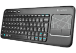
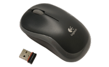

Deze hardware bieden wij aan:
Toetsenbord
Omschrijving:
LOGITECH K400 WIRELESS TOUCH KEYBOARD: BEDIEN U UW PC, LAPTOP OF TV MAKKELIJK OP AFSTAND
De Logitech K400 Wireless Touch Keyboard is een draadloos toetsenbord met handige sneltoetsen voor o.a. het volume en een Home-knop. Met de Logitech K400 kunt u uw pc, laptop of tv eenvoudig en draadloos bedienen tot op 10 meter afstand. Het grote, ingebouwde touchpad van 3,5 inch dient al geintegreerde muis. U kunt verticaal en horizontaal scrollen en zo uw pc, laptop of tv bedienen met enkele aanrakingen. U installeert dit toetsenbord makkelijk en snel via Plug&Play: u sluit de kleine draadloze ontvanger aan op een USB-poort aan en de Logitech K400 is klaar voor gebruik! De batterij van de K400 gaat tot wel 1 jaar mee.
€34,99
Muis
Omschrijving:
Deze comfortabele draadloze muis werkt tot 12 maanden op een enkele AA-batterij. Hij wordt geleverd met een nano-ontvanger die u in een USB-aansluiting van uw computer prikt en direct kunt vergeten. Zo klein is hij.
€14,99
Boxen

Omschrijving:
Volle bas en een compact ontwerp, de Logitech Multimedia Speakers Z213 hebben een down-firing subwoofer met een driver van 10 centimeter zodat je van een rijke, diepe baservaring kunt genieten die een extra dimensie aan muziek, films en games toevoegt. Pas de bas aan je voorkeuren aan met de daarvoor bestemde regelknop. Op de bedrade bedieningseenheid kun je gemakkelijk bij de volume- en aan-uitknoppen, evenals de hoofdtelefoonaansluiting. Het Z213-multimediaspeakersysteem levert uitstekende akoestiek zonder in te boeten op geluidskwaliteit of kostbare bureauruimte, in een compact, gekanteld speakerontwerp.
Systeemvereisten:
Audioapparaten met uitgang van 3.5mm zoals:
€21,99